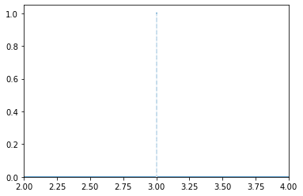
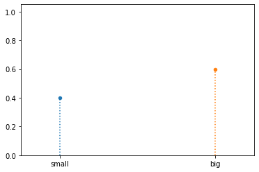
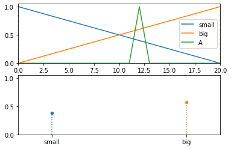

Fuzzify¶
- class floulib.Fuzzify(*args)¶
Bases:
object- __init__(*args)¶
Constructor
- Parameters:
*args (Terms | numpy.ndarray | Tuple[Term]) –
numpy.ndarray for numeric fuzzification.
Terms if only one parameter is given or several Term parameters for symbolic defuzzification.
- Raises:
TypeError – Raised if the argument is not an instance of Terms or numpy.ndarray when one parameter is given.
TypeError – Raised if args are not instances of
Termwhen several parameters are given.
- Return type:
None.
- numeric(*args)¶
Numeric fuzzification
- Parameters:
x (numbers.Number | Multilinear | Discrete) – The parameter for the fuzzification.
- Raises:
TypeError – Raised if the parameter is not an instance of numbers.Number, Multilinear or Discrete.
- Return type:
LR | Multilinear | Discrete
Example
>>> from floulib import Fuzzify, LR >>> x0 = 3 >>> X0 = Fuzzify().numeric(x0) >>> X0.plot(xlim = [2, 4]) >>> print(X0.is_precise()) True
- symbolic(x)¶
Symbolic fuzzification
- Parameters:
x (numbers.Number) – The imput.
- Raises:
Exception – Raised if the Terms are not given in the constructor.
- Returns:
The symbolic fuzzy subset.
- Return type:
Example
>>> from floulib import Fuzzify, Term, Triangle >>> small = Term('small', Triangle(0, 0, 20)) >>> big = Term('big', Triangle(0, 20, 20)) >>> x0 = 12 >>> X0 = Fuzzify(small, big).symbolic(x0) >>> X0.plot() >>> print(X0) 0.400/small + 0.600/big
Other solution using Terms
>>> from floulib import Fuzzify, Term, Terms, Triangle >>> small = Term('small', Triangle(0, 0, 20)) >>> big = Term('big', Triangle(0, 20, 20)) >>> T_size = Terms(small, big) >>> x0 = 12 >>> X0 = Fuzzify(T_size).symbolic(x0) >>> X0.plot() >>> print(X0) 0.400/small + 0.600/big
- symbolic_upper(x)¶
Upper symbolic fuzzification
The upper symbolic fuzzification is obtained by computing, for each term, its possibiliy knowing the input.
- Parameters:
x (Multilinear | Discrete) – The input.
- Raises:
Exception – Raised if terms are not provided to the constructor.
TypeError – Raised if x is not an instance of Multilinear or Discrete.
- Returns:
The symbolic fuzzy subset.
- Return type:
Example
>>> from floulib import Fuzzify, LR, Term, Terms, Triangle >>> small = Term('small', Triangle(0, 0, 20, label = 'small')) >>> big = Term('big', Triangle(0, 20, 20, label = 'big')) >>> T_size = Terms(small, big) >>> A = LR(12, 1, 1, label = 'A') >>> X0 = Fuzzify(T_size).symbolic_upper(A) >>> T_size.plot(nrows = 2).add_plot(A).add_plot(X0, index = 1) >>> print(X0) 0.429/small + 0.619/big
- symbolic_lower(x)¶
Lower symbolic fuzzification
The lower symbolic fuzzification is obtained by computing, for each term, its necessity knowing the input.
- Parameters:
x (Multilinear | Discrete) – The input.
- Raises:
Exception – Raised if terms are not provided to the constructor.
TypeError – Raised if x is not an instance of Multilinear.
- Returns:
The symbolic fuzzy subset.
- Return type:
Example
>>> from floulib import Fuzzify, LR, Term, Terms, Triangle >>> small = Term('small', Triangle(0, 0, 20, label = 'small')) >>> big = Term('big', Triangle(0, 20, 20, label = 'big')) >>> T_size = Terms(small, big) >>> A = LR(12, 1, 1, label = 'A') >>> X0 = Fuzzify(T_size).symbolic_lower(A) >>> T_size.plot(nrows = 2).add_plot(A).add_plot(X0, index = 1) >>> print(X0) 0.381/small + 0.571/big